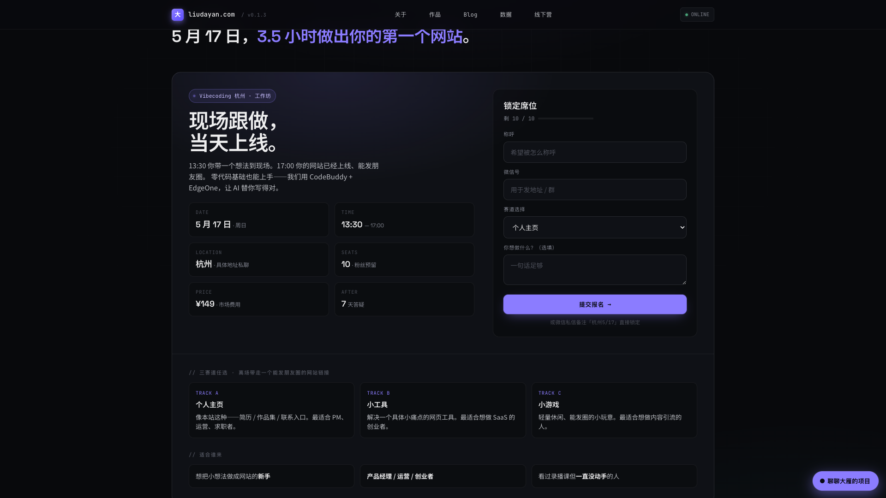

<template id="beat-5-cta-template">
  <div id="beat-5-cta" data-composition-id="beat-5-cta" data-width="1920" data-height="1080">
    <div class="scene">
      <div class="grid"></div>
      <div class="copy">
        <div class="eyebrow">WORKSHOP / CTA</div>
        <h2>5 月 17 日，杭州。<br />3.5 小时做出你的第一个网站。</h2>
        <p>网站里已经有入口。下一步，是把你的想法也做出来。</p>
        <div class="button">提交报名 →</div>
      </div>
      <div class="card">
        
      </div>
    </div>
    <style>
      [data-composition-id="beat-5-cta"], [data-composition-id="beat-5-cta"] * { box-sizing: border-box; }
      [data-composition-id="beat-5-cta"] .scene {
        position: relative;
        width: 100%;
        height: 100%;
        overflow: hidden;
        background: #08090c;
        color: #fff;
        font-family: "Noto Sans SC", "PingFang SC", sans-serif;
      }
      [data-composition-id="beat-5-cta"] .grid {
        position: absolute;
        inset: 0;
        background-image:
          linear-gradient(to right, rgba(255,255,255,0.035) 1px, transparent 1px),
          linear-gradient(to bottom, rgba(255,255,255,0.035) 1px, transparent 1px);
        background-size: 72px 72px;
      }
      [data-composition-id="beat-5-cta"] .copy {
        position: absolute;
        left: 160px;
        top: 160px;
        width: 760px;
        padding: 40px 42px;
        border-radius: 30px;
        background: rgba(248, 250, 252, 0.96);
      }
      [data-composition-id="beat-5-cta"] .eyebrow {
        margin-bottom: 24px;
        font: 600 18px/1 "JetBrains Mono", monospace;
        letter-spacing: 0.18em;
        color: #6d5efc;
      }
      [data-composition-id="beat-5-cta"] h2 {
        margin: 0 0 28px;
        font-size: 82px;
        line-height: 0.98;
        color: #0b0f19;
      }
      [data-composition-id="beat-5-cta"] p {
        margin: 0 0 34px;
        font-size: 30px;
        line-height: 1.45;
        color: #1f2937;
      }
      [data-composition-id="beat-5-cta"] .button {
        display: inline-block;
        padding: 24px 42px;
        border-radius: 20px;
        background: #8b7cff;
        color: #0a0b0f;
        font-size: 34px;
        font-weight: 700;
        box-shadow: 0 0 34px rgba(139,124,255,0.28);
      }
      [data-composition-id="beat-5-cta"] .card {
        position: absolute;
        right: 160px;
        top: 120px;
        width: 620px;
        padding: 20px;
        border-radius: 28px;
        border: 1px solid rgba(255,255,255,0.1);
        background: rgba(255,255,255,0.03);
      }
      [data-composition-id="beat-5-cta"] .card img {
        display: block;
        width: 100%;
        height: 780px;
        object-fit: cover;
        object-position: center top;
        border-radius: 18px;
      }
    </style>
    <script src="https://cdn.jsdelivr.net/npm/gsap@3.14.2/dist/gsap.min.js"></script>
    <script>
      window.__timelines = window.__timelines || {};
      const tl = gsap.timeline({ paused: true });
      tl.from(".eyebrow", { y: 18, opacity: 0, duration: 0.3 }, 0.08);
      tl.from("h2", { y: 34, opacity: 0, duration: 0.55, ease: "power3.out" }, 0.18);
      tl.from("p", { y: 20, opacity: 0, duration: 0.35 }, 0.42);
      tl.from(".button", { y: 18, opacity: 0, duration: 0.35 }, 0.58);
      tl.from(".card", { x: 48, opacity: 0, duration: 0.55, ease: "power2.out" }, 0.3);
      window.__timelines["beat-5-cta"] = tl;
    </script>
  </div>
</template>
